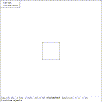
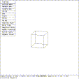

The first task is to invoke MGED. This tutorial will assume the user has a copy of the ``prim.g'' database in the current directory.
$mged prim.g
BRL-CAD Release 3.0 Graphics Editor (MGED) Compilation 82
Thu Sep 22 08:08:39 EDT 1988
mike@video.brl.mil:/cad/.mged.4d2
attach (nu|tek|tek4109|ps|plot|sgi)[nu]? sgi
ATTACHING sgi (SGI 4d)
Primitive Objects (units=mm)
mged>
The first three lines give information about which version of MGED is running,
when it was compiled, and who compiled it. The next line is the display
manager attach prompt. This prompt provides a list of available display
managers, then shows what the default will be (selected if the user answers
with a carriage return). In this case, the Silicon Graphics 4d display
manager was selected, as is noted by the following line.
Next the title of the database and
the unit of measurement used in the database are printed,
and finally, the first prompt is issued.
At this point MGED has loaded ``prim.g''; attached the SGI display;
and is awaiting commands. Attaching a display also causes what
is known as the MGED faceplate to be drawn on the graphics display.
The faceplate has several features of interest. In the upper left corner of the display, is a box which always shows the current MGED state. This can be one of six states: VIEWING, SOL PICK, SOL EDIT, OBJ PICK, OBJ PATH, or OBJ EDIT.
Immediately below, is the menu area. The only menu item initially shown is one labeled BUTTON MENU. This menu item toggles the display of the button menu entries when selected (more on selection later).
At the bottom of the display are two status lines. The first line contains information about the current view. The entry labeled cent= gives the model space coordinates of the dot in the center of the display. The entry labeled sz= reflects the current size in model units of the viewing cube. The viewing cube is a mathematical construct centered on the the dot in the center of the display. The ang= display shows the current rate of rotation in each of the three axes. The bottom line is used for several kinds of information. In the VIEWING state, it displays the title of the database.
The MGED viewing features are designed to allow the user to examine models at different angles. Preset views can be invoked at anytime by using either the menu or the button box. Selecting a preset view does not change the coordinates of the primitives, but instead changes the angle from which these primitives are displayed. Five standard views (top, right, front, 35/25, and 45/45) can be obtained by using either the bottom menu on the display screen or the control box. Three additional views (button, left, and rear) can be obtained by using the button box, but not by using the menu.
The normal or default viewing state is the ``top'' orientation, with model +X pointing towards the right of the screen, model +Y pointing towards the top of the screen, and model +Z pointing out of the screen. In the ``top'' view, the model and screen axes are the same. The ``reset'' button and ``Reset Viewsize'' menu items also result in a ``top'' view.
The following table shows the angles of rotation to obtain the other views.
View Angle of Rotation (from top)
Top 0, 0, 0
Bottom 180, 0, 0
Right 270, 0, 0
Left 270, 0, 180
Front 270, 0, 270
Rear 270, 0, 90
35, 25 295, 0, 235
mged> e arb8
vectorized in 0 sec
mged> size 12
mged>

Figure (t1-top-vw): ``arb8'' Top View
The e command causes the named object(s) - a solid named ``arb8'' in this case - to be displayed, and the size command sets the size of the viewing cube. Figure (t1-top-vw) shows what the display currently looks like. In this view, the X-axis is to the right, the Y-axis points up, and the Z-axis is perpendicular to (poking out of) the screen.
Twist the Y ROT knob clockwise and back.
Twist the X ROT knob counterclockwise and back.
These knobs, along with the Z ROT knob, rotate the viewing cube.
Use of the rotation
knobs allows the user to view the model from any orientation.
Turning a knob clockwise causes a rotation in the positive direction,
while turning a knob counterclockwise causes a negative rotation
(right-hand rule). The knobs are rate based, not position based;
once a rotation has been started, it will continue until the
knob is returned to zero (or the zeroknobs button is pressed).
Rotations are about the viewing cube (screen) axes, not the model axes.
Systems without knobs can use the knob command.
Move the mouse (or pen) until the cursor is in the BUTTON MENU
block and then press the middle mouse button (depress the pen).

Figure (t1-rot-vw): ``arb8'' Rotated View
Pressing the middle mouse button (or the pen) selects something. When the cursor is inside the menu area, a selection causes the event described by the menu item to occur. Selecting BUTTON MENU causes the button menu to appear on the left side of the screen. The BUTTON MENU menu item is a toggle; subsequent selection of this item will cause the button menu to disappear. Figure (t1-rot-vw) shows the new display.
Move the cursor from the menu area to a point near the
upper left corner of the solid and select it (press the center mouse
button).
In the VIEWING state, making a selection while outside of the menu
area will move the selected point to the center of the display. Look
carefully at the center of the display; the point just selected is now
located at the center dot. Use the center command to reset any
translations made with the mouse.
mged> center 0 0 0
mged>
From the VIEWING state, the user will normally transition to either the
SOL PICK or OBJ PICK state.
The SOL PICK state is selected by:
{kind=link}
{kind=link}